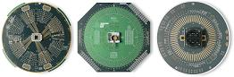
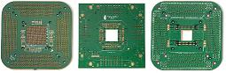

Test Equipment
Load Boards / Interface Boards
A
load board,
interface board,
or DUT board is a circuit board designed to serve as an
'interface'
circuit
between the automatic test equipment
(ATE)
and the device under test
(DUT).
Load boards
(see Fig. 1) contain the necessary components to: 1) set
up the DUT for correct testing by the ATE; 2) route
the test and response signals between the DUT and the ATE; and 3)
provide additional test capabilities that the ATE may not be able to
provide. There are
also load boards designed for the purpose of testing or calibrating the
ATE itself (see Fig. 2).
|
 |
|
Fig. 1.
Photos of ATE Interface Boards or Load Boards |
An
ideal load board introduces no distortion, noise, delays, nor errors to
the testing process of the DUT. This means that an ideal load board is
one that doesn't seem to exist at all, i.e., as if the DUT were directly
connected to the ATE. To come out with a load board as close as
possible to this ideal one is the challenge to every engineer who
designs load boards.
Load
boards are often
customized
to a specific device or group of devices. As such, complete,
ready-to-use load boards are not normally available off-the-shelf.
The usual way to acquire a load board for a new product is to have it
designed
and
fabricated.
Thus, most test engineering groups have a certain level of expertise in
designing and fabricating a load board.
A load board consists of a
PCB with a test socket or handler interface as well as a variety of
components (IC's, resistors, capacitors, inductors, relays, connectors,
etc.) that make up the load board's test circuits. The typical laminate
for the load board PCB is the
FR4
(Flame Retardant 4 fiber glass). The number of layers of a load board
PCB also varies, depending on the complexity of the design. Some load
boards for complex devices may even have more than 20 layers.
Load board design
takes into consideration many factors, one of which is
power supply routing.
It is good practice to assign a separate power plane for every supply
voltage needed by the DUT, even if two or more supplies will be tied up
to the same nominal voltage. This has two advantages: 1) noise
immunity between power supplies and 2) the ability to assign each power
supply to a different voltage later on. Adding
sense lines
as close as possible to the DUT to each power plane for output
monitoring would also be helpful. Put
decoupling capacitors
between each power supply pland and the ground plane to reduce power
supply noise. Note that the values of the capacitors must be
chosen based on the operation frequencies of the DUT.
Signal routing is another
consideration in the design of a load board. Avoid overlaying
power supply planes over signal planes. There are two types of DUT
signals, and guidelines for handling them in a load board differ. The
first type, the
low-speed digital signal,
doesn't require much as far as load board design goes. Digital signals
can share the same plane, but they should have their own plane. The
lengths of their traces should be the same.
|
 |
|
Fig.
2. Photos of load boards used for calibration
and
engineering purposes only |
The second type of DUT
signal is the
high-performance signal.
This signal type requires high-performance instrumentation for
measurement, because the speed and accuracy of these signals could not
be handled by the ATE. Keep the length of the cable connecting the DUT
to the load board as short as possible. Avoid parallel runs of
mixed signals as well, to avoid noise coupling. Needless to say,
high-performance signals need a signal plane of their own.
Load boards require
connectors
for cables that run to the test site. High-speed applications
commonly employ
SMA
and SSMB
connectors. Higher bandwidth applications are better off using the SMA
connector, since this screw-on/screw-off type of connector is larger and
designed for higher bandwidth than the SSMB connector, which is a
push/pull type of connector. SMA is also sturdier on the load board and
can withstand a greater deal of mechanical stresses.
Decoupling capacitors
must be placed as close to the DUT as possible - preferably
directly under the socket. AC coupling capacitors and
termination resistors must likewise be as close to the DUT as possible.
The use of
surface-mounted
components is also recommended for load boards.
Power supplies used for load boards must have enough power to energize
all relays on the board.
See also:
Test
Accessories;
Test Equipment;
Electrical Testing;
Semiconductor
Manufacturing
HOME
Copyright
©
2005.
EESemi.com.
All Rights Reserved.